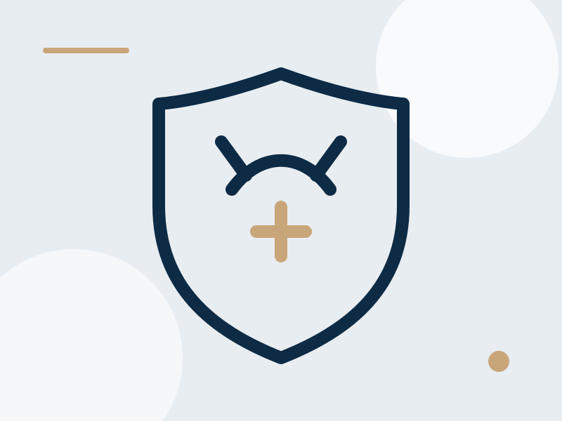

1
Consulta previa
Se revisan antecedentes, medicamentos, exploración, expectativas y el carácter permanente del procedimiento. También se resuelven dudas sobre fertilidad futura.

El Dr. José Ramón Márquez realiza vasectomías en Hermosillo como procedimiento ambulatorio, con orientación completa antes y después del procedimiento. El primer paso es una consulta previa donde se explica todo detalladamente.
Es un método anticonceptivo permanente en el que se interrumpen ambos conductos deferentes para evitar que los espermatozoides lleguen al semen. No se retiran los testículos ni se modifica la producción de testosterona.
Se revisan antecedentes, medicamentos, exploración, expectativas y el carácter permanente del procedimiento. También se resuelven dudas sobre fertilidad futura.
Habitualmente se realiza de manera ambulatoria con anestesia local. Si existe alguna necesidad particular, las alternativas se comentan antes de programarlo.
El paciente regresa a casa el mismo día con indicaciones para controlar molestias, proteger la herida y reconocer datos que ameritan revisión.
Es común presentar sensibilidad, inflamación leve o pequeños moretones durante los primeros días. La evolución no es idéntica en todos los pacientes.
Se indican reposo relativo, soporte escrotal, cuidado de la herida y analgésicos apropiados para el paciente.
Las actividades cotidianas se retoman gradualmente. El ejercicio intenso y la carga pesada se posponen según la evolución y el tipo de trabajo.
Pueden reanudarse cuando la molestia y la herida lo permitan, siguiendo las indicaciones recibidas. La vasectomía todavía no es efectiva de inmediato.
La mayor parte del líquido seminal proviene de la próstata y las vesículas seminales. Los espermatozoides representan una fracción pequeña, por lo que el cambio en el volumen eyaculado suele ser mínimo.
La vasectomía no busca cambiar el deseo, la erección ni el orgasmo. Cualquier síntoma sexual previo debe valorarse de forma independiente.
Después de la cirugía pueden permanecer espermatozoides en los conductos. Es necesario utilizar otro método anticonceptivo hasta que la espermatobioscopía de control confirme el resultado esperado.
El estudio se programa después de un periodo y número de eyaculaciones indicados durante el seguimiento; no debe sustituirse por la impresión de que “todo está bien”.
Existen técnicas de reversión o recuperación de espermatozoides, pero no garantizan recuperar la fertilidad. La decisión debe tomarse pensando en que será definitiva.
La vasectomía previene embarazos después de confirmarse su efectividad, pero no protege contra infecciones de transmisión sexual.
Anticoagulantes, cirugías previas, dolor escrotal u otras condiciones pueden modificar la preparación o el plan.
Debe considerarse un método permanente. No es recomendable decidirla pensando que una reversión futura siempre funcionará.
No se intervienen los mecanismos que producen testosterona. Si existen síntomas hormonales, deben estudiarse por separado.
El objetivo es modificar el transporte de espermatozoides, no la función sexual. El deseo, la erección y el orgasmo no deberían cambiar por este mecanismo.
Depende de las molestias y de si el trabajo implica esfuerzo físico. El retorno se individualiza durante las indicaciones posoperatorias.
Porque es la forma de comprobar si aún existen espermatozoides en el semen y cuándo puede suspenderse el anticonceptivo adicional.
Una consulta previa permite confirmar la decisión, revisar antecedentes y explicar preparación, procedimiento y seguimiento.
Recibe información clara sobre el procedimiento, recuperación, fertilidad y seguimiento antes de tomar una decisión.